ARIMAX/SARIMAX/VAR
ARIMAX
ARIMAX model assumes that future values of a variable linearly depend on its past values, as well as on the values of past (stochastic) shocks. It is an extended version of the ARIMA model, with other independent (predictor) variables. The model is also referred to as the dynamic regression model. The X added to the end stands for “exogenous”. In other words, it suggests adding a separate different outside variable to help measure our endogenous variable.
The ‘exogenous’ variables added here are COVID-19 case numbers and COVID-19 vaccine rates. The number of COVID-19 cases in US can affect healthcare stock prices, e.g. UNH. Higher case numbers may result in increased demand for healthcare services, such as hospitalizations, treatments, and testing, which could positively impact the stock prices of healthcare companies involved in providing those services. Conversely, lower case numbers may lead to reduced demand for healthcare services, potentially resulting in lower stock prices for healthcare companies.
Vaccine rates, specifically the rate at which a population is vaccinated against COVID-19, can also impact healthcare stock prices. Higher vaccine rates are generally seen as positive for healthcare companies, as vaccines are considered a key tool in controlling the spread of the virus and reducing the severity of illness. Higher vaccine rates may lead to decreased demand for COVID-19 treatments and testing, but increased demand for vaccines and other preventive healthcare measures, which could positively impact the stock prices of healthcare companies involved in vaccine production or distribution, as well as other preventive healthcare services.
In this section, we choose the UNH stock price to fit ARIMAX model with COVID-19 case numbers and COVID-19 vaccine rates.
Step 1: Data Prepare
Show the code
getSymbols("UNH", from="2020-12-16", src="yahoo")Show the code
UNH_df <- as.data.frame(UNH)
UNH_df$Date <- rownames(UNH_df)
UNH_df <- UNH_df[c('Date','UNH.Adjusted')]
UNH_df <- UNH_df %>%
mutate(Date = as.Date(Date)) %>%
complete(Date = seq.Date(min(Date), max(Date), by="day"))
# fill missing values in stock
UNH_df <- UNH_df %>% fill(UNH.Adjusted)
new_dates <- seq(as.Date('2020-12-16'), as.Date('2023-3-21'),'week')
UNH_df <- UNH_df[which((UNH_df$Date) %in% new_dates),]
vaccine_df <- read.csv('data/vaccine_clean.csv')
new_dates <- seq(as.Date('2020-12-16'), as.Date('2023-3-22'),'week')
#vaccine_df
vaccine_df$Date <- as.Date(vaccine_df$Date)
vaccine_df <- vaccine_df[which((vaccine_df$Date) %in% new_dates),]
#covid_df
covid_df <- read.csv('data/covid.csv')
#covid_ts <- ts(covid_df$Weekly.Cases, start = c(2020,1,29), frequency = 54)
covid_df$Date <- as.Date(covid_df$Date)
covid_df <- covid_df[covid_df$Date >= '2020-12-16'&covid_df$Date < '2023-03-22',]
# combine all data, create dataframe
df <- data.frame(UNH_df, vaccine_df$total_doses, covid_df$Weekly.Cases)
colnames(df) <- c('Date', 'stock_price', 'vaccine_dose','covid_case')
knitr::kable(head(df))| Date | stock_price | vaccine_dose | covid_case |
|---|---|---|---|
| 2020-12-16 | 329.2309 | 160010 | 1526464 |
| 2020-12-23 | 327.5330 | 577895 | 1499703 |
| 2020-12-30 | 334.7126 | 848447 | 1299023 |
| 2021-01-06 | 348.5672 | 1029958 | 1584212 |
| 2021-01-13 | 344.4632 | 1334188 | 1716354 |
| 2021-01-20 | 340.3883 | 1614134 | 1391546 |
Step 2: Plotting the Data
Show the code
df.ts<-ts(df,star=decimal_date(as.Date("2020-12-16",format = "%Y-%m-%d")),frequency = 52)
autoplot(df.ts[,c(2:4)], facets=TRUE) +
xlab("Date") + ylab("") +
ggtitle("Variables influencing UNH Stock Price in USA")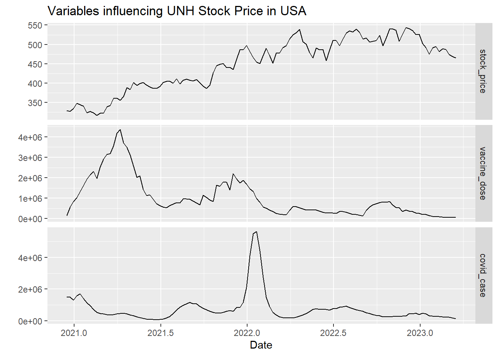
UNH stock price, Covid, Vaccine values
Step 3: Fitting the model using ’auto.arima()`
Here I’m using auto.arima() function to fit the ARIMAX model. Here we are trying to predict UNH stock price using COVID vaccine dose and COVID cases. All variables are time series and the exogenous variables in this case are vaccine_dose and covid_case.
Show the code
xreg <- cbind(Vac = df.ts[, "vaccine_dose"],
Imp = df.ts[, "covid_case"])
fit <- auto.arima(df.ts[, "stock_price"], xreg = xreg)
summary(fit)Series: df.ts[, "stock_price"]
Regression with ARIMA(0,1,0) errors
Coefficients:
Vac Imp
0e+00 0e+00
s.e. 1e-04 1e-04
sigma^2 = 177.9: log likelihood = -468.1
AIC=942.2 AICc=942.41 BIC=950.49
Training set error measures:
ME RMSE MAE MPE MAPE MASE ACF1
Training set 1.097616 13.16639 10.30662 0.233993 2.273228 0.1046469 0.04011524Show the code
checkresiduals(fit)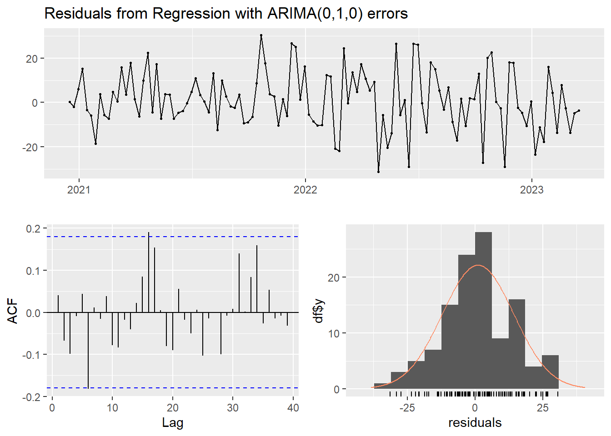
Ljung-Box test
data: Residuals from Regression with ARIMA(0,1,0) errors
Q* = 21.112, df = 24, p-value = 0.6321
Model df: 0. Total lags used: 24This is an ARIMA model. This is a Regression model with ARIMA(0,1,0) errors.
Step 4: Fitting the model manually
Here we will first have to fit the linear regression model predicting stock price using Covid cases and vaccine doses.
Then for the residuals, we will fit an ARIMA/SARIMA model.
Show the code
df$stock_price <- ts(df$stock_price,star=decimal_date(as.Date("2020-12-16",format = "%Y-%m-%d")),frequency = 52)
df$vaccine_dose <-ts(df$vaccine_dose,star=decimal_date(as.Date("2020-12-16",format = "%Y-%m-%d")),frequency = 52)
df$covid_case<-ts(df$covid_case,star=decimal_date(as.Date("2020-12-16",format = "%Y-%m-%d")),frequency = 52)
######### First fit the linear model#######
fit.reg <- lm(stock_price ~ vaccine_dose+covid_case, data=df)
summary(fit.reg)
Call:
lm(formula = stock_price ~ vaccine_dose + covid_case, data = df)
Residuals:
Min 1Q Median 3Q Max
-154.24 -42.59 8.62 42.91 82.36
Coefficients:
Estimate Std. Error t value Pr(>|t|)
(Intercept) 4.954e+02 7.932e+00 62.461 < 2e-16 ***
vaccine_dose -4.341e-05 5.043e-06 -8.607 4.47e-14 ***
covid_case -3.275e-06 5.345e-06 -0.613 0.541
---
Signif. codes: 0 '***' 0.001 '**' 0.01 '*' 0.05 '.' 0.1 ' ' 1
Residual standard error: 52.02 on 115 degrees of freedom
Multiple R-squared: 0.3944, Adjusted R-squared: 0.3839
F-statistic: 37.45 on 2 and 115 DF, p-value: 2.988e-13Show the code
res.fit<-ts(residuals(fit.reg),star=decimal_date(as.Date("2020-12-16",format = "%Y-%m-%d")),frequency = 52)
########## Then look at the residuals ########
acf(res.fit)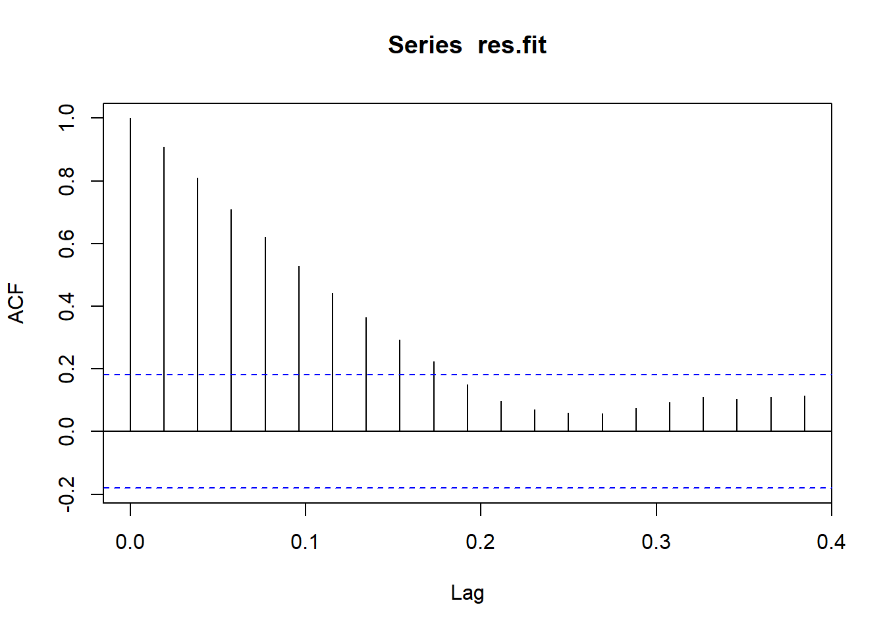
Show the code
Pacf(res.fit)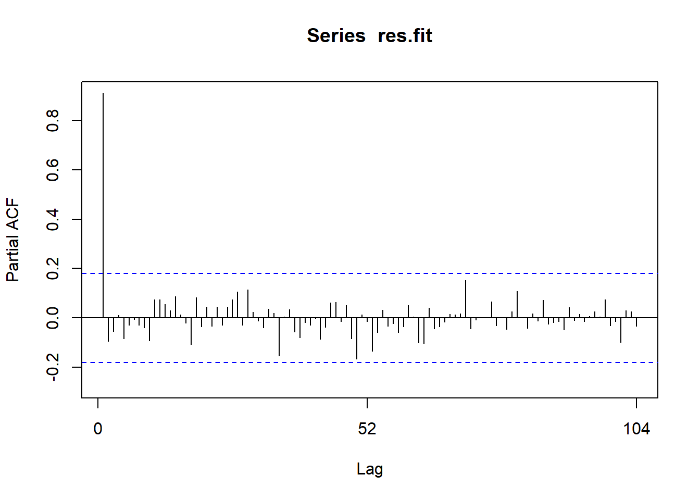
Show the code
res.fit %>% diff() %>% ggtsdisplay()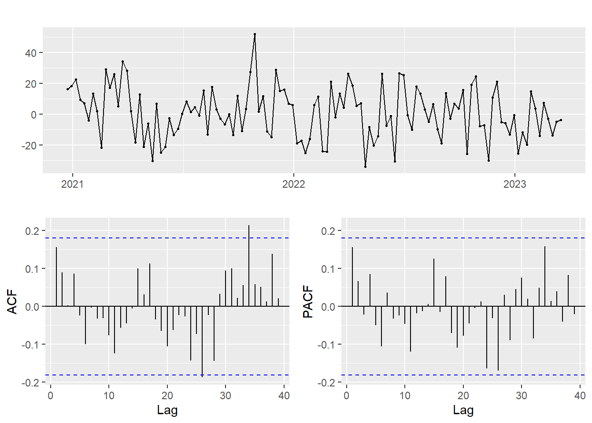
Show the code
res.fit %>% diff() %>% diff(52) %>% ggtsdisplay()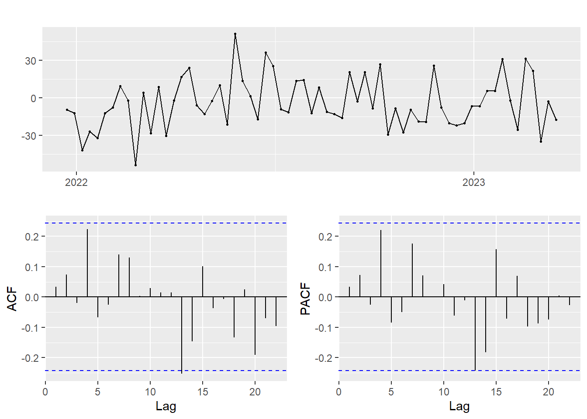
Finding the model parameters.
Show the code
d=1
i=1
temp= data.frame()
ls=matrix(rep(NA,6*23),nrow=23) # roughly nrow = 3x4x2
for (p in 1:3)# p=1,2,
{
for(q in 1:3)# q=1,2,
{
for(d in 0:1)#
{
if(p-1+d+q-1<=8)
{
model<- Arima(res.fit,order=c(p-1,d,q-1),include.drift=TRUE)
ls[i,]= c(p-1,d,q-1,model$aic,model$bic,model$aicc)
i=i+1
#print(i)
}
}
}
}
temp= as.data.frame(ls)
names(temp)= c("p","d","q","AIC","BIC","AICc")
#temp
knitr::kable(temp)| p | d | q | AIC | BIC | AICc |
|---|---|---|---|---|---|
| 0 | 0 | 0 | 1217.4187 | 1225.7307 | 1217.6292 |
| 0 | 1 | 0 | 993.5902 | 999.1146 | 993.6955 |
| 0 | 0 | 1 | 1117.7725 | 1128.8552 | 1118.1264 |
| 0 | 1 | 1 | 993.1256 | 1001.4121 | 993.3380 |
| 0 | 0 | 2 | 1058.3969 | 1072.2503 | 1058.9326 |
| 0 | 1 | 2 | 994.2046 | 1005.2533 | 994.5617 |
| 1 | 0 | 0 | 1005.4074 | 1016.4901 | 1005.7614 |
| 1 | 1 | 0 | 992.7214 | 1001.0079 | 992.9338 |
| 1 | 0 | 1 | 1003.8974 | 1017.7508 | 1004.4331 |
| 1 | 1 | 1 | 994.2405 | 1005.2892 | 994.5976 |
| 1 | 0 | 2 | 1003.9563 | 1020.5804 | 1004.7130 |
| 1 | 1 | 2 | 995.7980 | 1009.6089 | 996.3386 |
| 2 | 0 | 0 | 1002.8800 | 1016.7334 | 1003.4157 |
| 2 | 1 | 0 | 994.1790 | 1005.2277 | 994.5362 |
| 2 | 0 | 1 | 999.6163 | 1016.2404 | 1000.3730 |
| 2 | 1 | 1 | 995.8971 | 1009.7080 | 996.4376 |
| 2 | 0 | 2 | 1005.7699 | 1025.1647 | 1006.7881 |
| 2 | 1 | 2 | 995.6381 | 1012.2111 | 996.4017 |
| NA | NA | NA | NA | NA | NA |
| NA | NA | NA | NA | NA | NA |
| NA | NA | NA | NA | NA | NA |
| NA | NA | NA | NA | NA | NA |
| NA | NA | NA | NA | NA | NA |
Show the code
print('Minimum AIC')[1] "Minimum AIC"Show the code
temp[which.min(temp$AIC),] p d q AIC BIC AICc
8 1 1 0 992.7214 1001.008 992.9338Show the code
print('Minimum BIC')[1] "Minimum BIC"Show the code
temp[which.min(temp$BIC),] p d q AIC BIC AICc
2 0 1 0 993.5902 999.1146 993.6955Show the code
print('Minimum AICc')[1] "Minimum AICc"Show the code
temp[which.min(temp$AICc),] p d q AIC BIC AICc
8 1 1 0 992.7214 1001.008 992.9338Show the code
set.seed(1234)
model_output12 <- capture.output(sarima(res.fit, 0,1,0)) 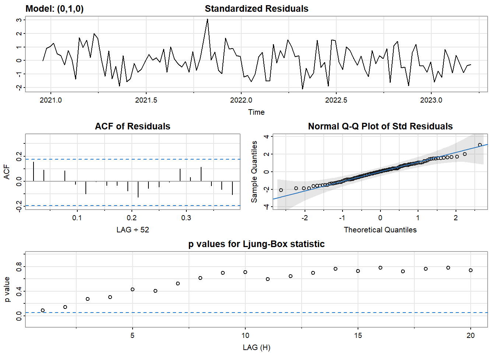
Show the code
cat(model_output12[9:38], model_output12[length(model_output12)], sep = "\n")$fit
Call:
arima(x = xdata, order = c(p, d, q), seasonal = list(order = c(P, D, Q), period = S),
xreg = constant, transform.pars = trans, fixed = fixed, optim.control = list(trace = trc,
REPORT = 1, reltol = tol))
Coefficients:
constant
1.0885
s.e. 1.5357
sigma^2 estimated as 275.9: log likelihood = -494.8, aic = 993.59
$degrees_of_freedom
[1] 116
$ttable
Estimate SE t.value p.value
constant 1.0885 1.5357 0.7088 0.4799
$AIC
[1] 8.492224
$AICc
[1] 8.492522
$BIC
[1] 8.539441Show the code
set.seed(1234)
model_output13 <- capture.output(sarima(res.fit, 1,1,0)) 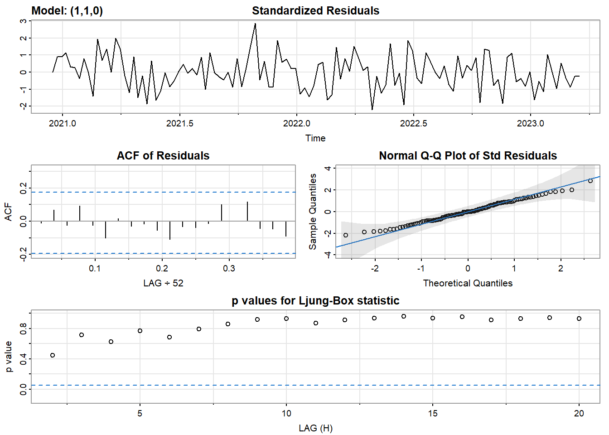
Show the code
cat(model_output13[16:46], model_output13[length(model_output13)], sep = "\n")$fit
Call:
arima(x = xdata, order = c(p, d, q), seasonal = list(order = c(P, D, Q), period = S),
xreg = constant, transform.pars = trans, fixed = fixed, optim.control = list(trace = trc,
REPORT = 1, reltol = tol))
Coefficients:
ar1 constant
0.1556 1.1047
s.e. 0.0913 1.7935
sigma^2 estimated as 269.2: log likelihood = -493.36, aic = 992.72
$degrees_of_freedom
[1] 115
$ttable
Estimate SE t.value p.value
ar1 0.1556 0.0913 1.7049 0.0909
constant 1.1047 1.7935 0.6160 0.5391
$AIC
[1] 8.484798
$AICc
[1] 8.485698
$BIC
[1] 8.555623ARIMA(0,1,0) and ARIMA(1,1,0) both look okay.
Step 5: Using Cross Validation
Show the code
k <- 36 # minimum data length for fitting a model
n <- length(res.fit)
n-k # rest of the observations[1] 82Show the code
i=1
err1 = c()
err2 = c()
rmse1 <- c()
rmse2 <- c()
for(i in 1:(n-k))
{
xtrain <- res.fit[1:(k-1)+i] #observations from 1 to 75
xtest <- res.fit[k+i] #76th observation as the test set
fit <- Arima(xtrain, order=c(1,1,0),include.drift=FALSE, method="ML")
fcast1 <- forecast(fit, h=1)
fit2 <- Arima(xtrain, order=c(0,1,0),include.drift=FALSE, method="ML")
fcast2 <- forecast(fit2, h=1)
#capture error for each iteration
# This is mean absolute error
err1 = c(err1, abs(fcast1$mean-xtest))
err2 = c(err2, abs(fcast2$mean-xtest))
# This is mean squared error
err3 = c(err1, (fcast1$mean-xtest)^2)
err4 = c(err2, (fcast2$mean-xtest)^2)
rmse1 <- c(rmse1, sqrt((fcast1$mean-xtest)^2))
rmse2 <- c(rmse2, sqrt((fcast2$mean-xtest)^2))
}
(MAE1=mean(err1)) # This is mean absolute error[1] 13.45554Show the code
(MAE2=mean(err2)) #has slightly higher error[1] 13.46804Show the code
MSE1=mean(err1) #fit 1,1,0
MSE2=mean(err2)#fit 0,1,0
MSE1[1] 13.45554Show the code
MSE2[1] 13.46804Show the code
rmse_df <- data.frame(rmse1,rmse2)
rmse_df$x <- as.numeric(rownames(rmse_df))
plot(rmse_df$x, rmse_df$rmse1, type = 'l', col=2, xlab="horizon", ylab="RMSE")
lines(rmse_df$x, rmse_df$rmse2, type="l",col=3)
legend("topleft",legend=c("fit1","fit2"),col=2:4,lty=1)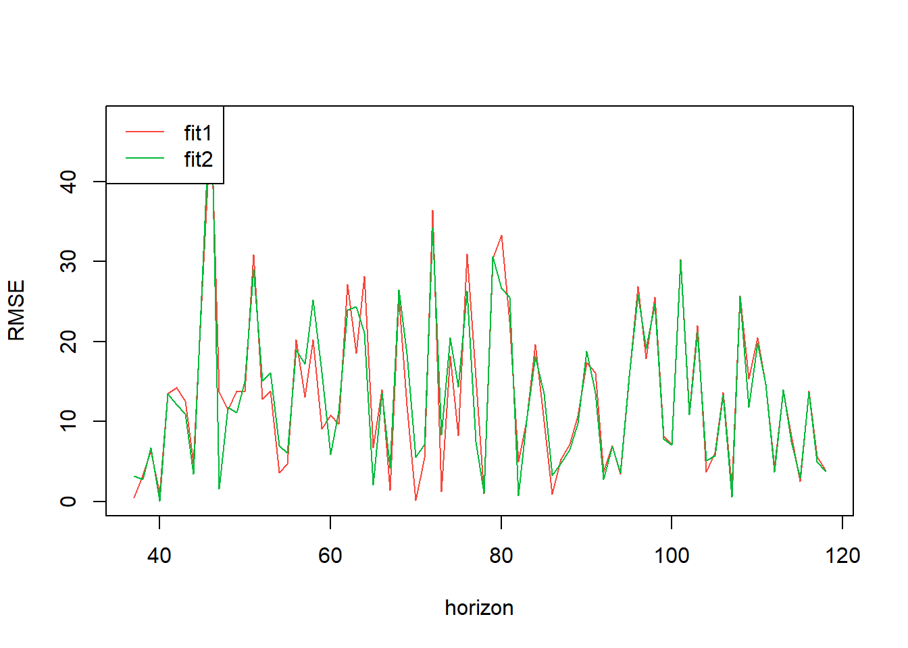
Step 6: forcasting
Show the code
vac_fit<-auto.arima(df$vaccine_dose) #fiting an ARIMA model to the vaccine_dose variable
summary(vac_fit)Series: df$vaccine_dose
ARIMA(1,1,1)
Coefficients:
ar1 ma1
0.8341 -0.6298
s.e. 0.0916 0.1128
sigma^2 = 4.824e+10: log likelihood = -1604.18
AIC=3214.36 AICc=3214.57 BIC=3222.65
Training set error measures:
ME RMSE MAE MPE MAPE MASE
Training set -1592.486 216829.1 132002.8 0.0009291879 13.08388 0.1149613
ACF1
Training set -0.06829849Show the code
fvac<-forecast(vac_fit)
covid_fit<-auto.arima(df$covid_case) #fiting an ARIMA model to the covid_case variable
summary(covid_fit)Series: df$covid_case
ARIMA(2,0,2) with non-zero mean
Coefficients:
ar1 ar2 ma1 ma2 mean
1.3306 -0.5128 0.8165 0.4848 733469.2
s.e. 0.1153 0.1117 0.1363 0.1076 189902.4
sigma^2 = 2.904e+10: log likelihood = -1588.94
AIC=3189.87 AICc=3190.63 BIC=3206.5
Training set error measures:
ME RMSE MAE MPE MAPE MASE
Training set -424.0988 166757.6 99191.78 -6.959882 17.02194 0.1095754
ACF1
Training set -0.00122146Show the code
fcov<-forecast(covid_fit)
fxreg <- cbind(Vac = fvac$mean,
Cov = fcov$mean)
fcast <- forecast(fit, xreg=fxreg) #fimp$mean gives the forecasted valuesWarning in forecast.forecast_ARIMA(fit, xreg = fxreg): xreg not required by this
model, ignoring the provided regressorsShow the code
autoplot(fcast) + xlab("Date") +
ylab("Price")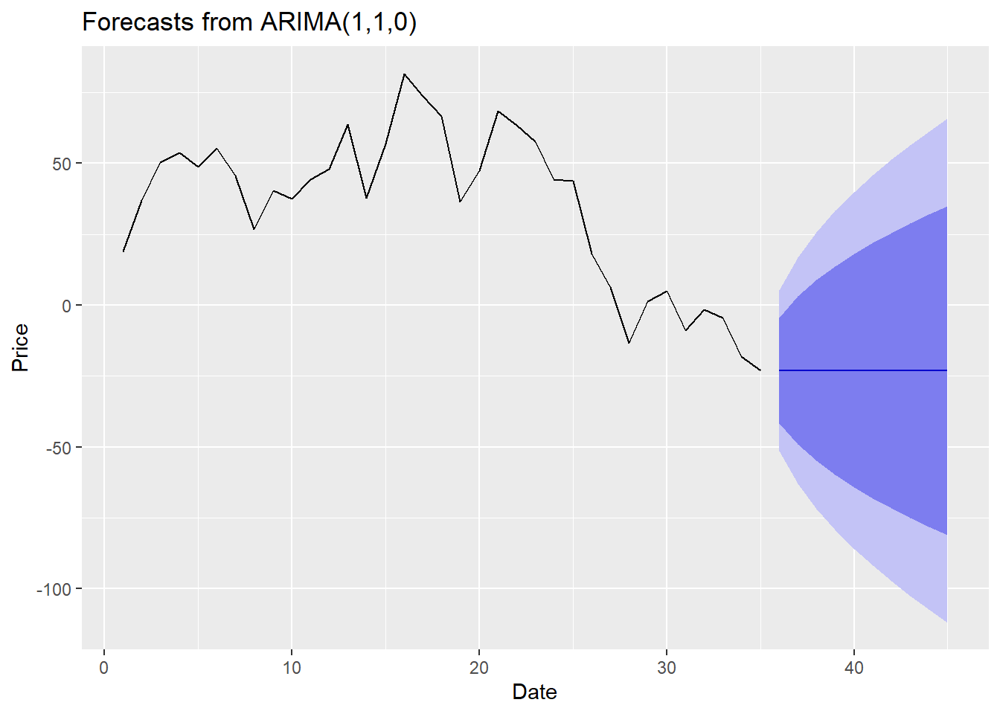
Discussion
Based on the result above, the number of daily COVID-19 vaccination number is not significant on predicting the UNH stock price, while the number of COVID-19 cases is. Though the number of COVID-19 vaccination number is not significant here, it does not mean that it does not affect healthcare stock price. While UNH is a healthcare company that is involved in health insurance, healthcare services, and technology solutions, it is not directly involved in COVID-19 vaccine development or production. Therefore, the number of COVID-19 vaccine doses administered may not have a direct impact on UNH’s operations or revenue.
VAR
VAR models (vector autoregressive models) are used for multivariate time series. The structure is that each variable is a linear function of past lags of itself and past lags of the other variables. A Vector autoregressive (VAR) model is useful when one is interested in predicting multiple time series variables using a single model.
The variables we are interested here are GDP and Unemployment rate in US. The overall health of the economy, as reflected by the GDP, can influence healthcare stock prices. A strong GDP generally indicates a healthy economy with higher levels of consumer spending, business investment, and economic growth. In such an environment, healthcare companies may experience increased demand for their products and services, which could positively impact their stock prices. Conversely, a weak GDP may signal an economic slowdown or recession, which could result in reduced demand for healthcare products and services, potentially leading to lower stock prices for healthcare companies. The unemployment rate, which reflects the percentage of the labor force that is unemployed, can also affect healthcare stock prices. A low unemployment rate is generally indicative of a strong labor market, with more people employed and potentially having access to employer-sponsored healthcare benefits. This may result in increased demand for healthcare services, positively impacting healthcare stock prices. On the other hand, a high unemployment rate may indicate a weak labor market, with more people losing their jobs and potentially losing access to healthcare benefits, leading to reduced demand for healthcare services and potentially lower stock prices for healthcare companies.
In this section, I’m fitting a VAR model to find multivariate relationship between the series UNH stock price, GDP, and Employment.
Step 1: Data Preparing
Show the code
getSymbols("UNH", from="1989-12-29", src="yahoo")[1] "UNH"Show the code
UNH_df <- as.data.frame(UNH)
UNH_df$Date <- rownames(UNH_df)
UNH_df <- UNH_df[c('Date','UNH.Adjusted')]
UNH_df <- UNH_df %>%
mutate(Date = as.Date(Date)) %>%
complete(Date = seq.Date(min(Date), max(Date), by="day"))
# fill missing values in stock
UNH_df <- UNH_df %>% fill(UNH.Adjusted)
#UNH_df
new_dates <- seq(as.Date('1990-01-01'), as.Date('2022-10-01'),'quarter')
#new_dates
UNH_df <- UNH_df[which((UNH_df$Date) %in% new_dates),]
gdp <- read.csv('data/GDP59.CSV')
gdp$DATE <- as.Date(gdp$DATE)
gdp <- gdp[which((gdp$DATE) %in% new_dates),]
emp <- read.csv('data/Employment59.CSV')
emp$DATE <- as.Date(emp$DATE)
emp <- emp[which((emp$DATE) %in% new_dates),]Show the code
dd <- data.frame(UNH_df,gdp,emp)
dd <- dd[,c(1,2,4,6)]
colnames(dd) <- c('DATE', 'stock_price','GDP','Employment')
knitr::kable(head(dd))| DATE | stock_price | GDP | Employment | |
|---|---|---|---|---|
| 125 | 1990-01-01 | 0.308110 | 5872.701 | 109418.7 |
| 126 | 1990-04-01 | 0.247759 | 5960.028 | 109786.7 |
| 127 | 1990-07-01 | 0.438343 | 6015.116 | 109651.0 |
| 128 | 1990-10-01 | 0.435356 | 6004.733 | 109255.0 |
| 129 | 1991-01-01 | 0.591069 | 6035.178 | 108783.0 |
| 130 | 1991-04-01 | 0.985114 | 6126.862 | 108312.3 |
Step 2: Plotting the data
Show the code
dd.ts<-ts(dd,star=decimal_date(as.Date("1990-01-01",format = "%Y-%m-%d")),frequency = 4)
autoplot(dd.ts[,c(2:4)], facets=TRUE) +
xlab("Year") + ylab("") +
ggtitle("UNH Stock Price, GDP and Employment in USA")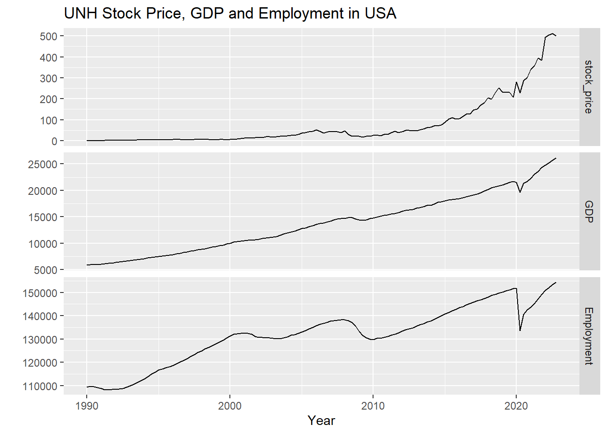
Step 3: Fitting a VAR model
Show the code
VARselect(dd[, c(2:4)], lag.max=10, type="both")$selection
AIC(n) HQ(n) SC(n) FPE(n)
10 9 9 9
$criteria
1 2 3 4 5
AIC(n) 2.941404e+01 2.865601e+01 2.849637e+01 2.814189e+01 2.812288e+01
HQ(n) 2.955407e+01 2.888005e+01 2.880444e+01 2.853398e+01 2.859898e+01
SC(n) 2.975880e+01 2.920762e+01 2.925484e+01 2.910721e+01 2.929506e+01
FPE(n) 5.948597e+12 2.788633e+12 2.379347e+12 1.671830e+12 1.644336e+12
6 7 8 9 10
AIC(n) 2.758294e+01 2.723307e+01 2.696700e+01 2.669062e+01 2.668670e+01
HQ(n) 2.814305e+01 2.787720e+01 2.769516e+01 2.750279e+01 2.758289e+01
SC(n) 2.896196e+01 2.881895e+01 2.875974e+01 2.869021e+01 2.889314e+01
FPE(n) 9.616264e+11 6.809549e+11 5.251270e+11 4.014819e+11 4.038690e+11It’s clear that according to selection criteria p=10 and 9 are good.
I’m fitting several models with p=1(for simplicity), 5, and 9.=> VAR(1), VAR(5), VAR(9)
Show the code
summary(VAR(dd[, c(2:4)], p=1, type='both'))
VAR Estimation Results:
=========================
Endogenous variables: stock_price, GDP, Employment
Deterministic variables: both
Sample size: 131
Log Likelihood: -2461.36
Roots of the characteristic polynomial:
1.028 0.9422 0.78
Call:
VAR(y = dd[, c(2:4)], p = 1, type = "both")
Estimation results for equation stock_price:
============================================
stock_price = stock_price.l1 + GDP.l1 + Employment.l1 + const + trend
Estimate Std. Error t value Pr(>|t|)
stock_price.l1 1.0341243 0.0394781 26.195 <2e-16 ***
GDP.l1 -0.0005115 0.0039797 -0.129 0.8979
Employment.l1 -0.0006163 0.0003038 -2.029 0.0446 *
const 69.2145818 34.7475964 1.992 0.0485 *
trend 0.3006699 0.4555344 0.660 0.5104
---
Signif. codes: 0 '***' 0.001 '**' 0.01 '*' 0.05 '.' 0.1 ' ' 1
Residual standard error: 14.62 on 126 degrees of freedom
Multiple R-Squared: 0.9849, Adjusted R-squared: 0.9844
F-statistic: 2057 on 4 and 126 DF, p-value: < 2.2e-16
Estimation results for equation GDP:
====================================
GDP = stock_price.l1 + GDP.l1 + Employment.l1 + const + trend
Estimate Std. Error t value Pr(>|t|)
stock_price.l1 2.55503 0.64584 3.956 0.000126 ***
GDP.l1 0.79020 0.06511 12.137 < 2e-16 ***
Employment.l1 -0.01069 0.00497 -2.151 0.033349 *
const 2355.16290 568.45522 4.143 6.24e-05 ***
trend 27.89290 7.45234 3.743 0.000275 ***
---
Signif. codes: 0 '***' 0.001 '**' 0.01 '*' 0.05 '.' 0.1 ' ' 1
Residual standard error: 239.2 on 126 degrees of freedom
Multiple R-Squared: 0.998, Adjusted R-squared: 0.998
F-statistic: 1.607e+04 on 4 and 126 DF, p-value: < 2.2e-16
Estimation results for equation Employment:
===========================================
Employment = stock_price.l1 + GDP.l1 + Employment.l1 + const + trend
Estimate Std. Error t value Pr(>|t|)
stock_price.l1 6.183e+00 4.862e+00 1.272 0.20584
GDP.l1 -5.610e-01 4.901e-01 -1.145 0.25458
Employment.l1 9.253e-01 3.741e-02 24.733 < 2e-16 ***
const 1.161e+04 4.279e+03 2.712 0.00762 **
trend 8.544e+01 5.610e+01 1.523 0.13028
---
Signif. codes: 0 '***' 0.001 '**' 0.01 '*' 0.05 '.' 0.1 ' ' 1
Residual standard error: 1801 on 126 degrees of freedom
Multiple R-Squared: 0.9786, Adjusted R-squared: 0.9779
F-statistic: 1441 on 4 and 126 DF, p-value: < 2.2e-16
Covariance matrix of residuals:
stock_price GDP Employment
stock_price 213.8 1386 12148
GDP 1385.8 57224 396720
Employment 12147.6 396720 3242998
Correlation matrix of residuals:
stock_price GDP Employment
stock_price 1.0000 0.3962 0.4613
GDP 0.3962 1.0000 0.9209
Employment 0.4613 0.9209 1.0000Show the code
summary(VAR(dd[, c(2:4)], p=5, type='both'))
VAR Estimation Results:
=========================
Endogenous variables: stock_price, GDP, Employment
Deterministic variables: both
Sample size: 127
Log Likelihood: -2267.863
Roots of the characteristic polynomial:
1.054 0.9435 0.9435 0.8781 0.8781 0.7952 0.7952 0.7806 0.7806 0.7709 0.7709 0.6959 0.4107 0.4107 0.3355
Call:
VAR(y = dd[, c(2:4)], p = 5, type = "both")
Estimation results for equation stock_price:
============================================
stock_price = stock_price.l1 + GDP.l1 + Employment.l1 + stock_price.l2 + GDP.l2 + Employment.l2 + stock_price.l3 + GDP.l3 + Employment.l3 + stock_price.l4 + GDP.l4 + Employment.l4 + stock_price.l5 + GDP.l5 + Employment.l5 + const + trend
Estimate Std. Error t value Pr(>|t|)
stock_price.l1 5.454e-01 1.048e-01 5.204 9.13e-07 ***
GDP.l1 6.007e-02 1.789e-02 3.358 0.00108 **
Employment.l1 -7.709e-03 2.385e-03 -3.232 0.00162 **
stock_price.l2 2.323e-01 1.468e-01 1.583 0.11639
GDP.l2 -6.188e-02 2.695e-02 -2.297 0.02353 *
Employment.l2 8.708e-03 4.117e-03 2.115 0.03668 *
stock_price.l3 -6.701e-02 1.636e-01 -0.410 0.68293
GDP.l3 1.256e-02 2.614e-02 0.480 0.63198
Employment.l3 -3.778e-03 4.122e-03 -0.917 0.36136
stock_price.l4 2.159e-01 1.796e-01 1.202 0.23192
GDP.l4 -1.114e-02 2.275e-02 -0.490 0.62525
Employment.l4 2.759e-03 3.733e-03 0.739 0.46146
stock_price.l5 2.480e-01 1.956e-01 1.268 0.20751
GDP.l5 -1.060e-02 1.379e-02 -0.769 0.44375
Employment.l5 -6.394e-04 2.197e-03 -0.291 0.77155
const 1.189e+02 3.723e+01 3.194 0.00183 **
trend 1.493e+00 5.610e-01 2.661 0.00897 **
---
Signif. codes: 0 '***' 0.001 '**' 0.01 '*' 0.05 '.' 0.1 ' ' 1
Residual standard error: 12.06 on 110 degrees of freedom
Multiple R-Squared: 0.9909, Adjusted R-squared: 0.9896
F-statistic: 750.5 on 16 and 110 DF, p-value: < 2.2e-16
Estimation results for equation GDP:
====================================
GDP = stock_price.l1 + GDP.l1 + Employment.l1 + stock_price.l2 + GDP.l2 + Employment.l2 + stock_price.l3 + GDP.l3 + Employment.l3 + stock_price.l4 + GDP.l4 + Employment.l4 + stock_price.l5 + GDP.l5 + Employment.l5 + const + trend
Estimate Std. Error t value Pr(>|t|)
stock_price.l1 -1.30445 1.54245 -0.846 0.399555
GDP.l1 1.92765 0.26327 7.322 4.28e-11 ***
Employment.l1 -0.18525 0.03510 -5.277 6.65e-07 ***
stock_price.l2 7.85075 2.15990 3.635 0.000425 ***
GDP.l2 -0.49800 0.39656 -1.256 0.211852
Employment.l2 0.14315 0.06059 2.363 0.019907 *
stock_price.l3 1.97665 2.40806 0.821 0.413510
GDP.l3 -0.68441 0.38474 -1.779 0.078023 .
Employment.l3 0.07846 0.06066 1.293 0.198571
stock_price.l4 -3.50097 2.64351 -1.324 0.188127
GDP.l4 -0.53338 0.33481 -1.593 0.114012
Employment.l4 0.03338 0.05493 0.608 0.544643
stock_price.l5 -4.52830 2.87918 -1.573 0.118643
GDP.l5 0.62554 0.20300 3.081 0.002603 **
Employment.l5 -0.07633 0.03233 -2.361 0.019978 *
const 1593.63764 547.91857 2.909 0.004394 **
trend 21.22796 8.25642 2.571 0.011473 *
---
Signif. codes: 0 '***' 0.001 '**' 0.01 '*' 0.05 '.' 0.1 ' ' 1
Residual standard error: 177.5 on 110 degrees of freedom
Multiple R-Squared: 0.999, Adjusted R-squared: 0.9988
F-statistic: 6815 on 16 and 110 DF, p-value: < 2.2e-16
Estimation results for equation Employment:
===========================================
Employment = stock_price.l1 + GDP.l1 + Employment.l1 + stock_price.l2 + GDP.l2 + Employment.l2 + stock_price.l3 + GDP.l3 + Employment.l3 + stock_price.l4 + GDP.l4 + Employment.l4 + stock_price.l5 + GDP.l5 + Employment.l5 + const + trend
Estimate Std. Error t value Pr(>|t|)
stock_price.l1 -3.786e+01 1.190e+01 -3.182 0.00190 **
GDP.l1 6.787e+00 2.030e+00 3.343 0.00113 **
Employment.l1 -1.385e-02 2.707e-01 -0.051 0.95928
stock_price.l2 7.770e+01 1.666e+01 4.664 8.77e-06 ***
GDP.l2 -2.705e+00 3.058e+00 -0.885 0.37831
Employment.l2 6.207e-01 4.673e-01 1.328 0.18686
stock_price.l3 4.014e+00 1.857e+01 0.216 0.82927
GDP.l3 -8.103e+00 2.967e+00 -2.731 0.00736 **
Employment.l3 1.098e+00 4.678e-01 2.346 0.02075 *
stock_price.l4 -1.641e+01 2.039e+01 -0.805 0.42269
GDP.l4 -1.499e+00 2.582e+00 -0.581 0.56270
Employment.l4 -1.900e-01 4.237e-01 -0.448 0.65470
stock_price.l5 -2.700e+01 2.221e+01 -1.216 0.22657
GDP.l5 4.674e+00 1.566e+00 2.985 0.00349 **
Employment.l5 -5.865e-01 2.493e-01 -2.352 0.02044 *
const 1.222e+04 4.226e+03 2.891 0.00462 **
trend 1.203e+02 6.368e+01 1.890 0.06146 .
---
Signif. codes: 0 '***' 0.001 '**' 0.01 '*' 0.05 '.' 0.1 ' ' 1
Residual standard error: 1369 on 110 degrees of freedom
Multiple R-Squared: 0.9879, Adjusted R-squared: 0.9861
F-statistic: 560.4 on 16 and 110 DF, p-value: < 2.2e-16
Covariance matrix of residuals:
stock_price GDP Employment
stock_price 145.5 455.4 5503
GDP 455.4 31506.6 225145
Employment 5503.3 225144.8 1874014
Correlation matrix of residuals:
stock_price GDP Employment
stock_price 1.0000 0.2127 0.3333
GDP 0.2127 1.0000 0.9266
Employment 0.3333 0.9266 1.0000Show the code
summary(VAR(dd[, c(2:4)], p=9, type='both'))
VAR Estimation Results:
=========================
Endogenous variables: stock_price, GDP, Employment
Deterministic variables: both
Sample size: 123
Log Likelihood: -2076.371
Roots of the characteristic polynomial:
1.058 1.051 1.018 1.018 1.012 1.012 1.012 1.012 1.005 1.005 1.003 1.003 0.9793 0.9793 0.9726 0.9726 0.8256 0.8256 0.8098 0.8098 0.7926 0.7926 0.6662 0.6662 0.4868 0.4868 0.0237
Call:
VAR(y = dd[, c(2:4)], p = 9, type = "both")
Estimation results for equation stock_price:
============================================
stock_price = stock_price.l1 + GDP.l1 + Employment.l1 + stock_price.l2 + GDP.l2 + Employment.l2 + stock_price.l3 + GDP.l3 + Employment.l3 + stock_price.l4 + GDP.l4 + Employment.l4 + stock_price.l5 + GDP.l5 + Employment.l5 + stock_price.l6 + GDP.l6 + Employment.l6 + stock_price.l7 + GDP.l7 + Employment.l7 + stock_price.l8 + GDP.l8 + Employment.l8 + stock_price.l9 + GDP.l9 + Employment.l9 + const + trend
Estimate Std. Error t value Pr(>|t|)
stock_price.l1 0.6177986 0.1140057 5.419 4.61e-07 ***
GDP.l1 0.0415175 0.0139527 2.976 0.003717 **
Employment.l1 -0.0069645 0.0020733 -3.359 0.001131 **
stock_price.l2 0.3603716 0.1652332 2.181 0.031680 *
GDP.l2 -0.0157162 0.0211664 -0.743 0.459633
Employment.l2 0.0048987 0.0033424 1.466 0.146093
stock_price.l3 0.0177119 0.1607489 0.110 0.912499
GDP.l3 -0.0009781 0.0212811 -0.046 0.963439
Employment.l3 -0.0018913 0.0034992 -0.540 0.590135
stock_price.l4 -0.1568989 0.1711382 -0.917 0.361596
GDP.l4 -0.0352143 0.0218848 -1.609 0.110953
Employment.l4 0.0072039 0.0035652 2.021 0.046168 *
stock_price.l5 0.3383735 0.2044761 1.655 0.101294
GDP.l5 -0.0156536 0.0222246 -0.704 0.482964
Employment.l5 0.0016545 0.0036673 0.451 0.652934
stock_price.l6 0.1416245 0.2112799 0.670 0.504299
GDP.l6 -0.0184066 0.0221573 -0.831 0.408236
Employment.l6 -0.0012687 0.0036506 -0.348 0.728965
stock_price.l7 -0.9691876 0.2444899 -3.964 0.000144 ***
GDP.l7 0.0190303 0.0219980 0.865 0.389190
Employment.l7 -0.0017353 0.0035712 -0.486 0.628163
stock_price.l8 1.0643895 0.2599676 4.094 8.96e-05 ***
GDP.l8 0.0123808 0.0212167 0.584 0.560927
Employment.l8 -0.0058935 0.0033845 -1.741 0.084893 .
stock_price.l9 -0.2681893 0.2116088 -1.267 0.208149
GDP.l9 0.0063637 0.0130395 0.488 0.626663
Employment.l9 0.0035409 0.0021429 1.652 0.101786
const 79.8647702 39.9369777 2.000 0.048411 *
trend 0.9524397 0.5617195 1.696 0.093276 .
---
Signif. codes: 0 '***' 0.001 '**' 0.01 '*' 0.05 '.' 0.1 ' ' 1
Residual standard error: 8.687 on 94 degrees of freedom
Multiple R-Squared: 0.9959, Adjusted R-squared: 0.9947
F-statistic: 819 on 28 and 94 DF, p-value: < 2.2e-16
Estimation results for equation GDP:
====================================
GDP = stock_price.l1 + GDP.l1 + Employment.l1 + stock_price.l2 + GDP.l2 + Employment.l2 + stock_price.l3 + GDP.l3 + Employment.l3 + stock_price.l4 + GDP.l4 + Employment.l4 + stock_price.l5 + GDP.l5 + Employment.l5 + stock_price.l6 + GDP.l6 + Employment.l6 + stock_price.l7 + GDP.l7 + Employment.l7 + stock_price.l8 + GDP.l8 + Employment.l8 + stock_price.l9 + GDP.l9 + Employment.l9 + const + trend
Estimate Std. Error t value Pr(>|t|)
stock_price.l1 -5.605e+00 1.777e+00 -3.154 0.00217 **
GDP.l1 1.818e+00 2.175e-01 8.360 5.58e-13 ***
Employment.l1 -1.497e-01 3.232e-02 -4.631 1.17e-05 ***
stock_price.l2 1.352e+01 2.576e+00 5.250 9.43e-07 ***
GDP.l2 -7.098e-01 3.300e-01 -2.151 0.03403 *
Employment.l2 1.262e-01 5.211e-02 2.422 0.01734 *
stock_price.l3 -1.116e+00 2.506e+00 -0.445 0.65722
GDP.l3 -2.534e-01 3.318e-01 -0.764 0.44683
Employment.l3 3.585e-02 5.455e-02 0.657 0.51262
stock_price.l4 1.673e+00 2.668e+00 0.627 0.53208
GDP.l4 -8.506e-02 3.412e-01 -0.249 0.80365
Employment.l4 1.384e-02 5.558e-02 0.249 0.80384
stock_price.l5 -7.495e-01 3.188e+00 -0.235 0.81462
GDP.l5 1.171e-01 3.465e-01 0.338 0.73604
Employment.l5 -2.497e-02 5.717e-02 -0.437 0.66327
stock_price.l6 -1.389e+01 3.294e+00 -4.216 5.71e-05 ***
GDP.l6 2.705e-02 3.454e-01 0.078 0.93775
Employment.l6 -9.452e-03 5.691e-02 -0.166 0.86846
stock_price.l7 -1.613e+00 3.812e+00 -0.423 0.67319
GDP.l7 -2.916e-01 3.429e-01 -0.850 0.39727
Employment.l7 7.971e-02 5.567e-02 1.432 0.15551
stock_price.l8 7.701e+00 4.053e+00 1.900 0.06049 .
GDP.l8 9.947e-02 3.308e-01 0.301 0.76428
Employment.l8 -1.132e-01 5.276e-02 -2.144 0.03457 *
stock_price.l9 1.073e+00 3.299e+00 0.325 0.74571
GDP.l9 1.156e-01 2.033e-01 0.569 0.57100
Employment.l9 3.477e-02 3.341e-02 1.041 0.30064
const 1.603e+03 6.226e+02 2.575 0.01159 *
trend 2.134e+01 8.757e+00 2.437 0.01669 *
---
Signif. codes: 0 '***' 0.001 '**' 0.01 '*' 0.05 '.' 0.1 ' ' 1
Residual standard error: 135.4 on 94 degrees of freedom
Multiple R-Squared: 0.9995, Adjusted R-squared: 0.9993
F-statistic: 6211 on 28 and 94 DF, p-value: < 2.2e-16
Estimation results for equation Employment:
===========================================
Employment = stock_price.l1 + GDP.l1 + Employment.l1 + stock_price.l2 + GDP.l2 + Employment.l2 + stock_price.l3 + GDP.l3 + Employment.l3 + stock_price.l4 + GDP.l4 + Employment.l4 + stock_price.l5 + GDP.l5 + Employment.l5 + stock_price.l6 + GDP.l6 + Employment.l6 + stock_price.l7 + GDP.l7 + Employment.l7 + stock_price.l8 + GDP.l8 + Employment.l8 + stock_price.l9 + GDP.l9 + Employment.l9 + const + trend
Estimate Std. Error t value Pr(>|t|)
stock_price.l1 -6.801e+01 1.216e+01 -5.595 2.17e-07 ***
GDP.l1 6.439e+00 1.488e+00 4.328 3.75e-05 ***
Employment.l1 1.372e-01 2.211e-01 0.621 0.53643
stock_price.l2 1.137e+02 1.762e+01 6.453 4.74e-09 ***
GDP.l2 -4.116e+00 2.257e+00 -1.824 0.07136 .
Employment.l2 5.335e-01 3.564e-01 1.497 0.13778
stock_price.l3 -4.159e+00 1.714e+01 -0.243 0.80882
GDP.l3 -3.838e+00 2.269e+00 -1.691 0.09408 .
Employment.l3 5.003e-01 3.731e-01 1.341 0.18318
stock_price.l4 1.066e+01 1.825e+01 0.584 0.56038
GDP.l4 -6.501e-02 2.334e+00 -0.028 0.97783
Employment.l4 1.168e-01 3.802e-01 0.307 0.75925
stock_price.l5 2.259e+01 2.180e+01 1.036 0.30277
GDP.l5 8.889e-01 2.370e+00 0.375 0.70845
Employment.l5 -2.821e-01 3.911e-01 -0.721 0.47245
stock_price.l6 -1.130e+02 2.253e+01 -5.017 2.48e-06 ***
GDP.l6 -1.567e+00 2.363e+00 -0.663 0.50891
Employment.l6 2.161e-01 3.893e-01 0.555 0.58019
stock_price.l7 -2.070e+01 2.607e+01 -0.794 0.42930
GDP.l7 -1.096e+00 2.346e+00 -0.467 0.64133
Employment.l7 4.753e-01 3.808e-01 1.248 0.21512
stock_price.l8 8.864e+01 2.772e+01 3.198 0.00189 **
GDP.l8 1.933e+00 2.262e+00 0.854 0.39515
Employment.l8 -1.204e+00 3.609e-01 -3.336 0.00122 **
stock_price.l9 -3.272e+01 2.256e+01 -1.450 0.15042
GDP.l9 8.076e-01 1.390e+00 0.581 0.56273
Employment.l9 4.222e-01 2.285e-01 1.848 0.06777 .
const 1.262e+04 4.259e+03 2.963 0.00386 **
trend 9.703e+01 5.990e+01 1.620 0.10859
---
Signif. codes: 0 '***' 0.001 '**' 0.01 '*' 0.05 '.' 0.1 ' ' 1
Residual standard error: 926.4 on 94 degrees of freedom
Multiple R-Squared: 0.9945, Adjusted R-squared: 0.9928
F-statistic: 603.2 on 28 and 94 DF, p-value: < 2.2e-16
Covariance matrix of residuals:
stock_price GDP Employment
stock_price 75.47 290.5 2750
GDP 290.52 18342.3 112144
Employment 2749.66 112143.8 858125
Correlation matrix of residuals:
stock_price GDP Employment
stock_price 1.0000 0.2469 0.3417
GDP 0.2469 1.0000 0.8939
Employment 0.3417 0.8939 1.0000Step 4: Using Cross Validation
Show the code
n=length(dd$stock_price)
k=39
#n-k=92; 92/4=23;
rmse1 <- matrix(NA, 96,3)
rmse2 <- matrix(NA, 96,3)
rmse3 <- matrix(NA,23,4)
year<-c()
# Convert data frame to time series object
ts_obj <- ts(dd[, c(2:4)], star=decimal_date(as.Date("1990-01-01",format = "%Y-%m-%d")),frequency = 4)
st <- tsp(ts_obj )[1]+(k-1)/4
for(i in 1:23)
{
xtrain <- window(ts_obj, end=st + i-1)
xtest <- window(ts_obj, start=st + (i-1) + 1/4, end=st + i)
fit <- VAR(ts_obj, p=5, type='both')
fcast <- predict(fit, n.ahead = 4)
fgdp<-fcast$fcst$GDP
femp<-fcast$fcst$Employment
fsp<-fcast$fcst$stock_price
ff<-data.frame(fsp[,1],fgdp[,1],femp[,1])
year<-st + (i-1) + 1/4
ff<-ts(ff,start=c(year,1),frequency = 4)
a = 4*i-3
b= 4*i
rmse1[c(a:b),] <-sqrt((ff-xtest)^2)
fit2 <- VAR(ts_obj, p=9, type='both')
fcast2 <- predict(fit2, n.ahead = 4)
fgdp<-fcast2$fcst$GDP
femp<-fcast2$fcst$Employment
fsp<-fcast2$fcst$stock_price
ff2<-data.frame(fsp[,1],fgdp[,1],femp[,1])
year<-st + (i-1) + 1/4
ff2<-ts(ff2,start=c(year,1),frequency = 4)
a = 4*i-3
b= 4*i
rmse2[c(a:b),] <-sqrt((ff2-xtest)^2)
}
yr = rep(c(1999:2022),each =4)
qr = rep(paste0("Q",1:4),24)
rmse1 = data.frame(yr,qr,rmse1)
names(rmse1) =c("Year", "Quater","Stock_Price","GDP","Employment")
rmse2 = data.frame(yr,qr,rmse2)
names(rmse2) =c("Year", "Quater","Stock_Price","GDP","Employment")
ggplot() +
geom_line(data = rmse1, aes(x = Year, y = Stock_Price),color = "blue") +
geom_line(data = rmse2, aes(x = Year, y = Stock_Price),color = "red") +
labs(
title = "CV RMSE for Stock_Price",
x = "Date",
y = "RMSE",
guides(colour=guide_legend(title="Fit")))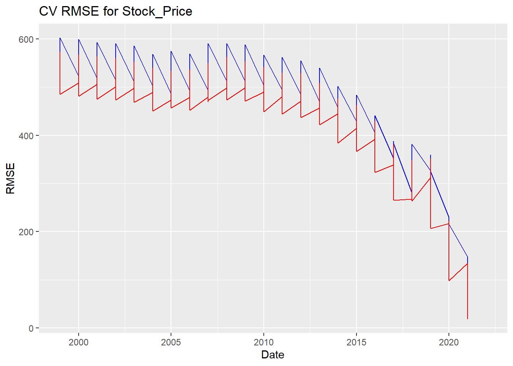
Show the code
ggplot() +
geom_line(data = rmse1, aes(x = Year, y = GDP),color = "blue") +
geom_line(data = rmse2, aes(x = Year, y = GDP),color = "red") +
labs(
title = "CV RMSE for GDP",
x = "Date",
y = "RMSE",
guides(colour=guide_legend(title="Fit")))Warning: Removed 4 rows containing missing values (`geom_line()`).
Removed 4 rows containing missing values (`geom_line()`).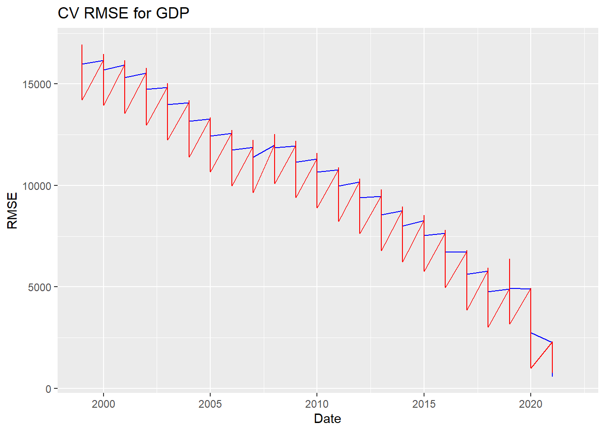
Show the code
ggplot() +
geom_line(data = rmse1, aes(x = Year, y = Employment),color = "blue") +
geom_line(data = rmse2, aes(x = Year, y = Employment),color = "red") +
labs(
title = "CV RMSE for Employment",
x = "Date",
y = "RMSE",
guides(colour=guide_legend(title="Fit")))Warning: Removed 4 rows containing missing values (`geom_line()`).
Removed 4 rows containing missing values (`geom_line()`).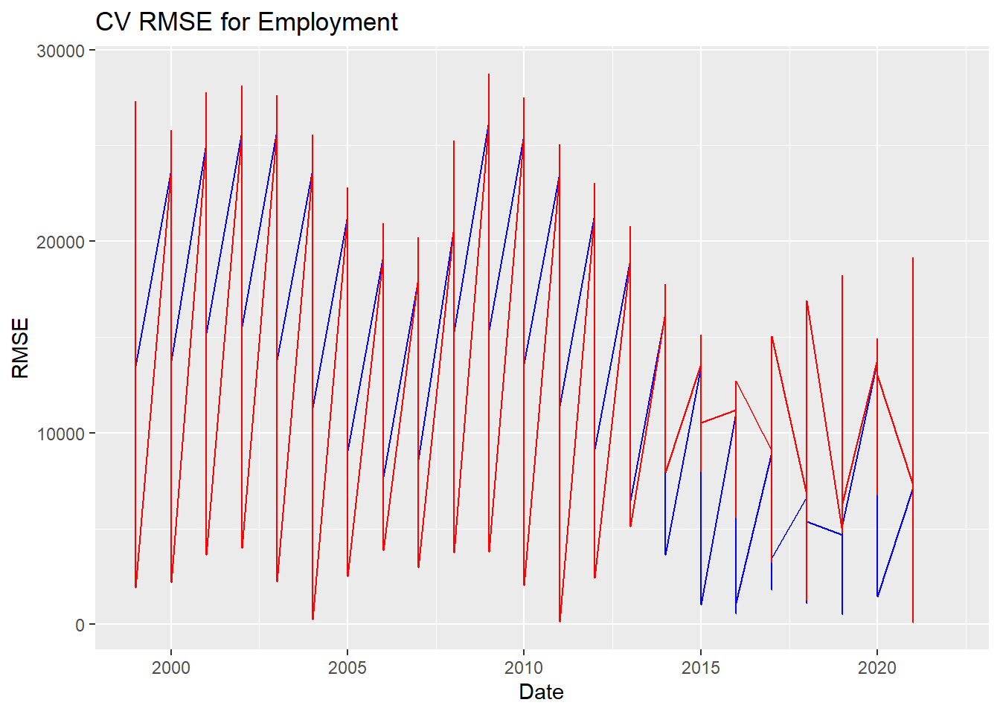
fit 1 is better
Step 5: Forecast
Show the code
forecasts <- predict(VAR(dd[, c(2:4)], p=5, type='both'))
# visualize the iterated forecasts
plot(forecasts)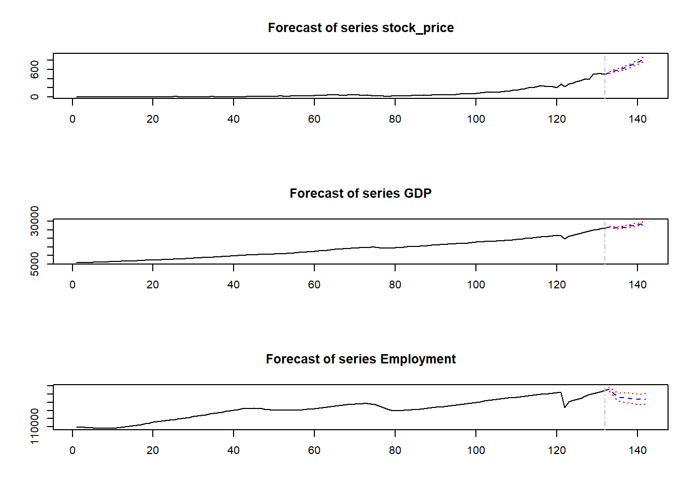